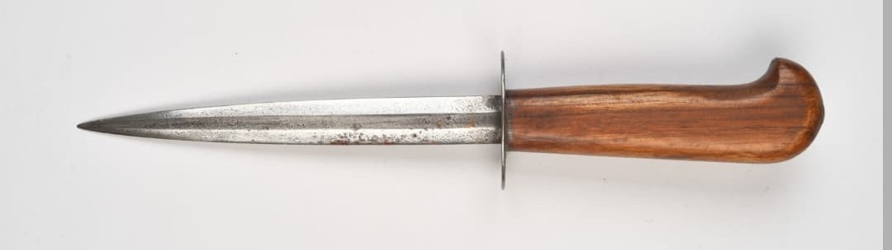

Introduction
Les armes françaises de la Seconde Guerre mondiale représentent un ensemble varié de modèles issus de plusieurs décennies d’évolution. Entre modernisation rapide, héritage de la Grande Guerre et innovations techniques, l’armement français de 1915 à 1945 reflète une période complexe où coexistent équipements anciens et armes de conception récente.
Cette section du Musée HOP WW2 présente l’ensemble des armes blanches, fusils, pistolets, fusils-mitrailleurs, mitrailleuses et armes d’appui utilisées par les forces françaises durant le conflit. Chaque fiche offre une description détaillée, des photographies, et les éléments permettant d’identifier un modèle authentique.
Présentation générale
Héritier direct des combats rapprochés de la Première Guerre mondiale, le poignard de tranchée reste utilisé par certaines unités françaises durant la période 1939–1940. Conçu pour le combat silencieux et les actions rapprochées, il est apprécié pour sa robustesse et sa simplicité.
Plusieurs modèles existent, souvent fabriqués dans des ateliers régimentaires ou par des manufactures civiles réquisitionnées. Leur apparence varie, mais tous partagent une même philosophie : efficacité maximale dans un encombrement minimal.

Caractéristiques
- Lame : acier forgé, 15 à 25 cm
- Poignée : bois, cuir ou métal selon les modèles
- Fourreau : cuir ou acier
- Usage : combat rapproché, infiltration, défense personnelle
- Période : WW1 (origine) – réutilisation WW2

Histoire & Contexte
Né dans les tranchées de 1914–1918, le poignard de tranchée est conçu pour les assauts nocturnes, les patrouilles silencieuses et les combats dans les boyaux. Sa simplicité permet une production rapide et une grande variété de modèles.
Durant la Seconde Guerre mondiale, il reste présent dans certaines unités, notamment les troupes coloniales, les éclaireurs, les sapeurs et les groupes francs. Il est parfois porté en complément de la baïonnette réglementaire.
Authentification
- Lame forgée à la main (souvent non standardisée)
- Poignée en bois ou cuir d’époque
- Fourreau artisanal ou d’arsenal
- Patine naturelle liée à l’âge